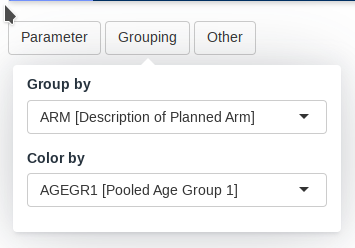

Scatterplot module
scatterplot.Rmd
This guide provides a detailed overview of the
scatterplot module and its features. It is meant to provide
guidance to App Creators on creating Apps in DaVinci using the
scatterplot module. Walk-throughs for sample app creation
using the module are also included to demonstrate the various module
specific features.
The scatterplot module makes it possible to visualize a
scatterplot of two biomarkers with different levels of grouping.
Pre-requisite:
 “Parameter”
Term Disambiguation
“Parameter”
Term Disambiguation
The guide uses the term “parameter” at several places. This term in the guide represents clinical analysis parameters and values such as laboratory values, safety values, etc as used in the clinical dataset context. This can be confused with the word parameter as used in a programming context - “parameters of a function”. Therefore, to fully disambiguate the usage in this guide:
- Parameter is used exclusively in the clinical dataset context
- Argument is used to represent parameter of a function in the programming context
Features
scatterplot features the following plot and tables:
- A scatterplot with different custom groupings showing a regression line.
- A table showing the population listing of the selected points in the chart.
- A table showing summary data about the regression and correlation between the parameters
It supports bookmarking.
Arguments for the module
dv.explorer.parameter::mod_scatterplot() module uses
several arguments with the following being mandatory and the rest
optional. As part of app creation, the app creator should specify the
values for these arguments as applicable.
Mandatory Arguments
module_id: A unique identifier of type character for the module in the app.subjid_var: A common column across all datasets that uniquely identify subjects. By default: “SUBJID”-
bm_dataset_name: The dataset that contains the continuous parameters. It expects a dataset similar to https://www.cdisc.org/kb/examples/adam-basic-data-structure-bds-using-paramcd-80288192 , 1 record per subject per parameter per analysis visitIt expects, at least, the columns passed in the arguments,
subjid_var,cat_var,par_var,visit_varandvalue_vars. -
group_dataset_name:It expects a dataset with an structure similar to https://www.cdisc.org/kb/examples/adam-subject-level-analysis-adsl-dataset-80283806 , one record per subject It expects to contain, at least,
subjid_var
Refer to dv.explorer.parameter::mod_scatterplot() for
the complete list of arguments and their description.
Input menus
 |
 |
A set of menus allows to select a set of parameters, groupings and settings of the visualization.
Tables
Creating a boxplot application
adbm_dataset <- dv.explorer.parameter:::safety_data()[["bm"]] %>%
dplyr::mutate(
USUBJID = factor(USUBJID),
PARCAT1 = factor(PARCAT1),
PARAM = factor(PARAM),
AVISIT = factor(AVISIT)
)
adsl_dataset <- dv.explorer.parameter:::safety_data()[["sl"]] %>%
dplyr::mutate(USUBJID = factor(USUBJID))
dv.manager::run_app(
data = list(dummy = list(adbm = adbm_dataset, adsl = adsl_dataset)),
module_list = list(
Scatterplot = dv.explorer.parameter::mod_scatterplot(
"scatterplot",
bm_dataset_name = "adbm",
group_dataset_name = "adsl",
cat_var = "PARCAT1",
par_var = "PARAM",
value_vars = "AVAL",
visit_var = "AVISIT",
subjid_var = "USUBJID"
)
),
filter_data = "adsl",
filter_key = "USUBJID"
)